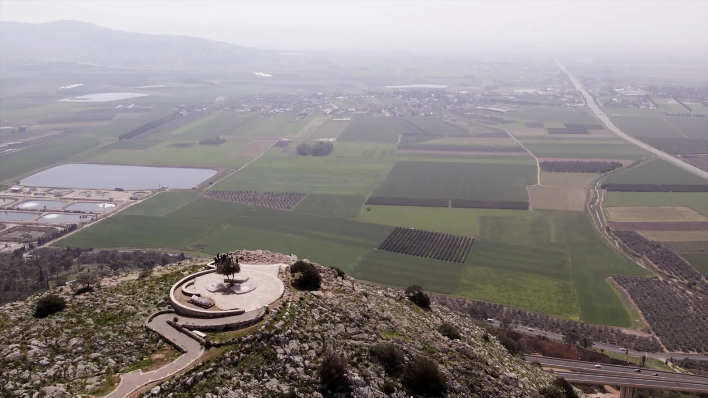
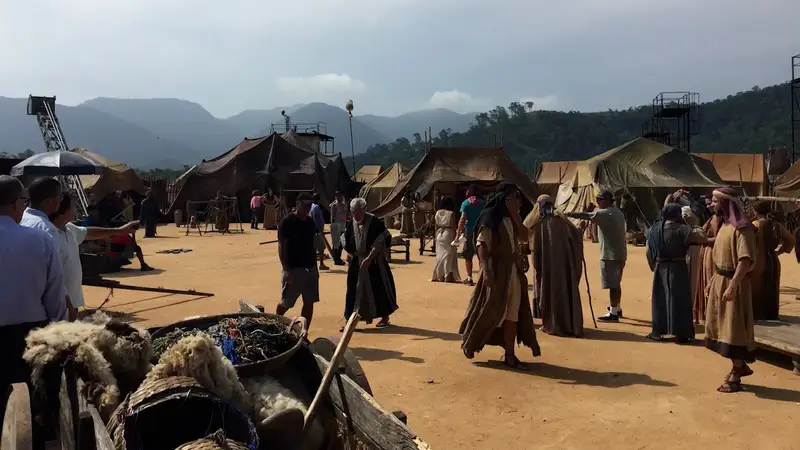
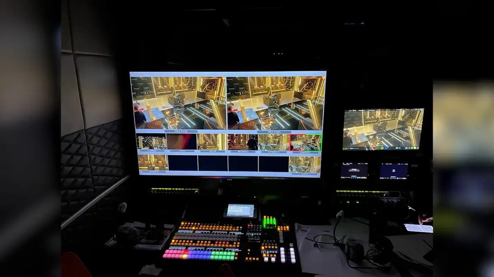
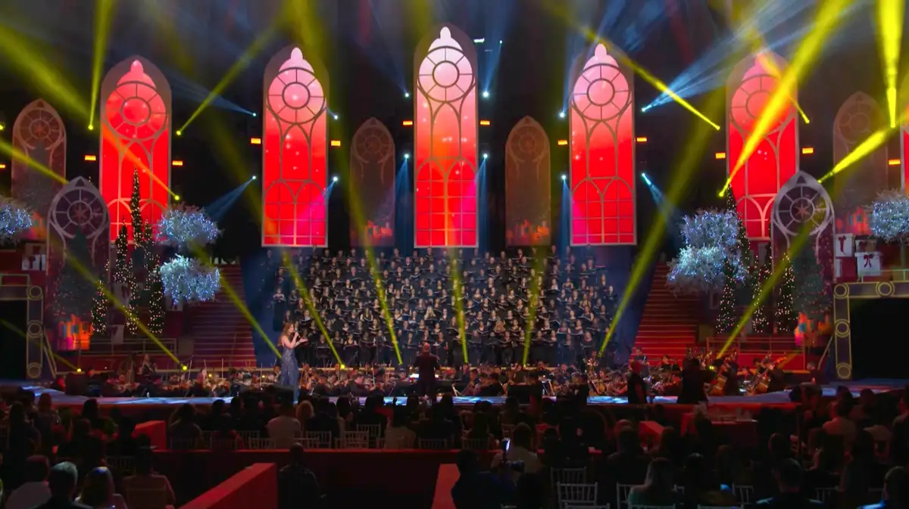
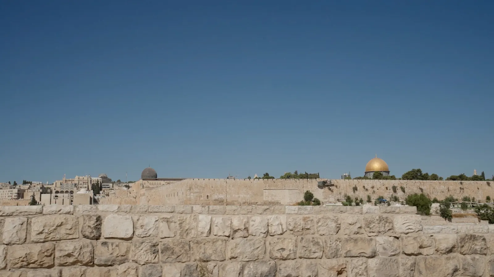
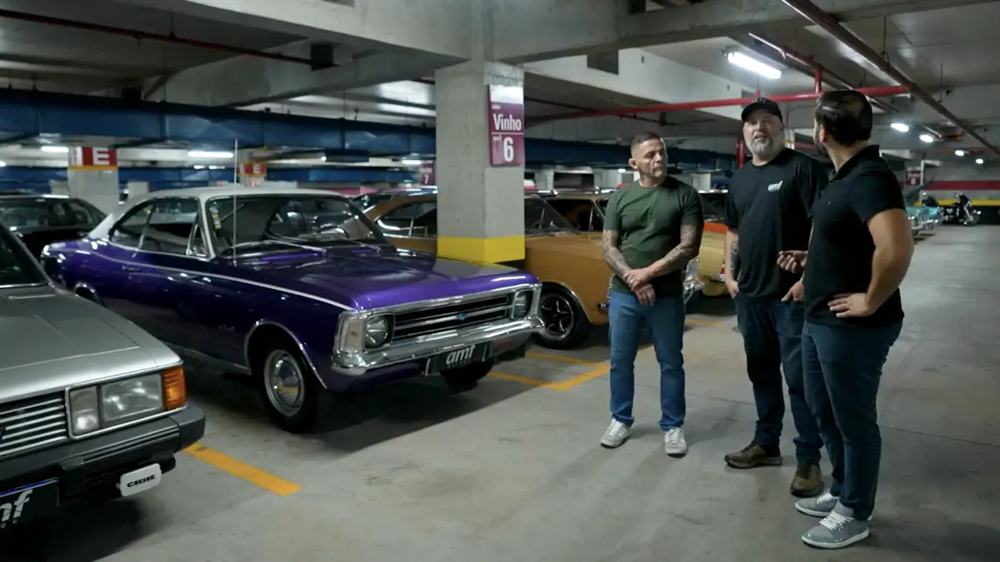
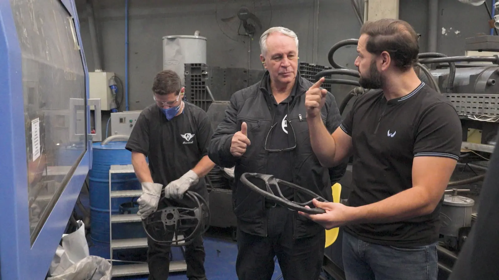
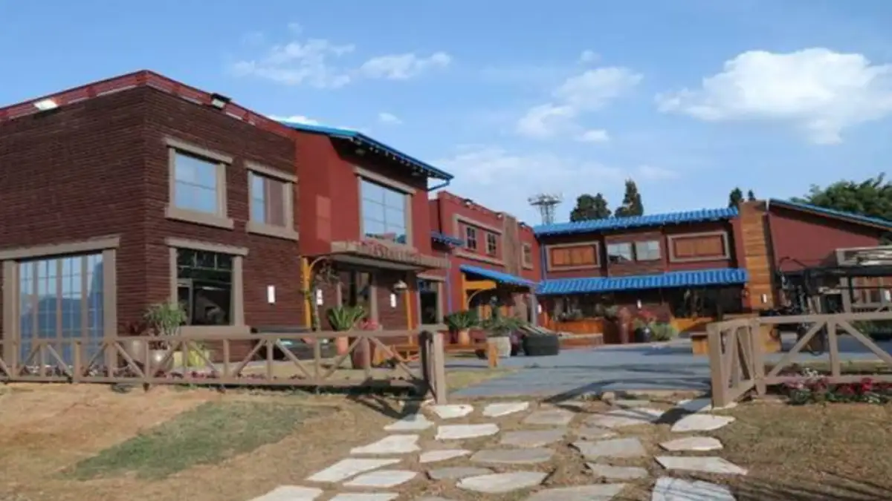
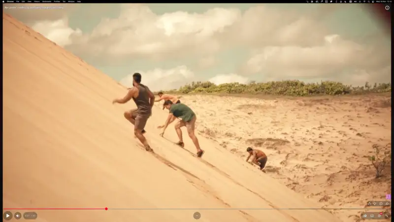

A 21-episode documentary series shot in the Holy Land, shot and finished in 4K.

From script to delivery, for broadcasters, platforms and brands: our stages, our cameras, our crews and our post, in whatever format the project needs.
Every photo is from a real i9 project. The line under it says exactly what i9 did there.

Months of shooting with the same look in the first and the last episode. Stage, cameras, crew and post, in the format the project needs.

Many hours, many cameras, no second take. We build the camera, audio and crew operation so the format runs every day.

Stage show, studio audience, interview or field segments, delivered so the show airs on the scheduled day.

Travel, research and many hours of footage. We shoot, organise and finish in 4K, for TV, streaming or cinema.

A series, show or podcast the audience seeks out on its own, with a brand behind it, ready for TV, YouTube and social.

The stage, crew and equipment of TV production for a shoot day, from script to delivery.

Events cut live and sent to air or stream, nationally or to several countries at once.
Produced, co-produced, original, crew or rental: the credit follows what i9 actually did.
A 21-episode documentary series shot in the Holy Land, shot and finished in 4K.

The car show produced entirely by i9. It airs on RFTV, NGT, PlayTV and YouTube, on the Netmotors TV channel.
Field shoots end to end, directing, camera, lighting and audio, plus audio and video post-production.

Four seasons of the reality show: three regular and one summer edition, 2012 to 2014.

TV Globo’s outdoor reality show: an audio operator, a camera operator and rental equipment.
The same house develops, shoots, finishes and, when you want, distributes. Finished i9 content can go on to the content marketplace.